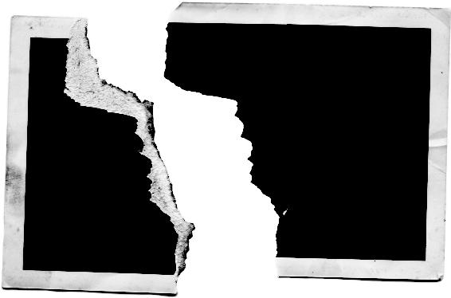

Torn Polaroid
Half of a smile and half of a sleeve. The background is a hallway with two EXIT signs—one lit, one dead.
The tear line doesn’t look angry. It looks deliberate.
Ink on the white border: “Where the tracks split.” A second hand, different pressure, added a small arrow pointing left.